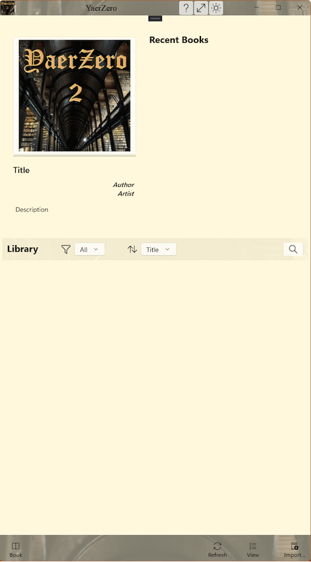
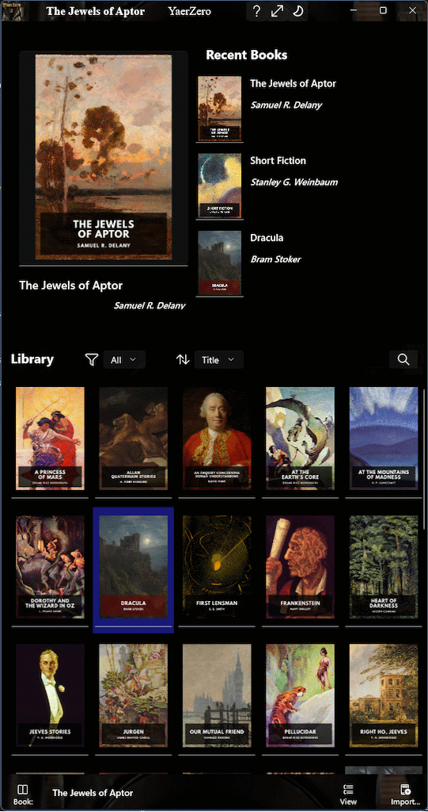
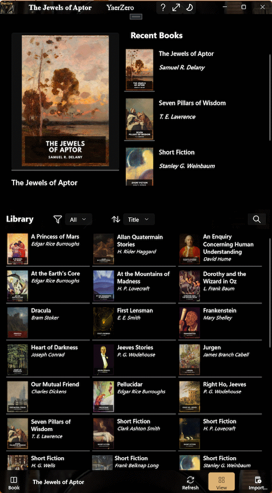

YearZero Privacy Policy
Description
YaerZero is an ebook reader, currently supporting:
- ePub 2
- ePub 3
- CBZ graphic novels and comics
- CBR graphic novels and comics
YaerZero is an ebook reader, currently supporting:
These are open standards for electronic books, created and maintained by the International Digital Publishing Forum (IDPF). ePub files are essentially zipped collections of XHTML files, images, CSS stylesheets, and various metadata files. YaerZero supports both ePub2 and ePub3 formats, allowing users to read a wide variety of ebooks with rich formatting and multimedia content.
ePub format books are available from various sources, including:
Plus many, many more.
YaerZero supports as much of these standards as is required to view most DRM-free books available at the time of writing. It does not support audiobook or synchronised audio-reading capabilities. At all times it should degrade gracefully.
CBZ (Comic Book Zip) and CBR (Comic Book Rar) are popular formats for digital comics and graphic novels. These formats are essentially compressed archives (ZIP for CBZ and RAR for CBR) containing a series of image files that represent the pages of the comic. YaerZero allows users to read CBZ and CBR files, providing an optimal reading experience for graphic content. Where the archive contains a ComicInfo.xml file, YaerZero will use that to display Author, Artist, Title and any Description present.
As the only difference between these formats is the type of compression used, we will refer to both of these formats as CBx, unless it matters.
CBx format comics can be found on various platforms, including:
Collections of both free and paid content are available from many other sources as well. We highly recommend supporting your favourite authors and artists by purchasing their work through legitimate channels.
The Humble Bundle site is an excellent source for collected works in various fields and formats at very reasonable prices. They regularly have textbooks and comic collections at significant discounts.
A good source of information on ebook formats is Wikipedia's E-book File Formats article.

You will see an interface resembling the one to the right:
At the top is the familiar menu bar with our application icon and name, some space, and three icons.
To the right, there is the usual Windows furniture — Minimize, Maximize/Restore, and Close buttons.
We have our default cover, bearing the YaerZero name.
The image used for the application icon and for the default book cover is of Trinity College Library in Dublin. This beautiful library is the current home of The Book of Kells. The original photograph was taken by Graeme P. Bell, and the final image was created using Paint.NET. No AI tools were used.
When a book is selected, this image will change to the cover (if any) present in the selected ebook.
The bar beneath the image will show roughly how much reading progress has been made in the selected book. Title, Author, Artist, and Description will be replaced by values from the selected ebook.
Located at the top right, this section displays a list of the six most recently accessed books, including any that have been newly loaded.
Each entry includes:
• A small book cover
thumbnail for visual identification.
• The book title displayed prominently.
• The author's name listed below the title.
This section allows users to quickly resume reading their most recent selections.
A dedicated Library section allows users to browse either their complete collection or a filtered view.
At the bottom-left is the grayed-out Current Book button. When a book is being read, this will display the name of the book, and selecting it will open the book in the reading view.
The Details View button is a toggle. Initially, YaerZero loads with the library in Covers mode, displaying book covers and reading progress for each volume. Swapping to Details mode displays a smaller version of the cover, Title, Author, and progress.
And finally we have the Add Book button — selecting this will bring up a multiple-select file-picker dialog box.
Books can be added using the file-picker dialog box to browse the user's system. The user may import a single book, and YaerZero will open the reader view as soon as it has processed enough to do so. Once the “working” indicator in the bottom right finishes, the book will be safely stored in the library and the full functionality of YaerZero will be available.
If multiple books are imported simultaneously, YaerZero will not return control until all selected books have been imported — unless the user chooses to cancel the process.
If YaerZero is the default reader (for .epub, .cbz and .cbr files), double-clicking on a book file will import the book into the library and launch the reader view as soon as enough of the book has been processed. This may result in some images not being in place initially, but do not be concerned — YaerZero will continue working in the background and will finish importing. The user may even switch to another book in the library.
Once the “working” indicator in the bottom right finishes, the new book will be safely stored in the library, with all elements in place.
Drag-and-Drop...
The user may use Drag-and-Drop to import single or multiple files, with the same caveats as using the file-picker.
When importing multiple books, YaerZero will disable most of its user interface while working. If a single book is imported, it will endeavour to return control as quickly as possible, presenting the ebook in readable form while disabling only those parts of the user experience that require a completely processed book.
This is recommended when the user has a single new book they wish to read now! Multiple books may be imported en masse; however, this is only recommended when building a library from a pre-existing folder. It can be very slow.
YaerZero imports ebooks by decompressing the original file and processing the contents into a format that can be rapidly presented back to the user.
This process can be extremely swift for a plain Gutenberg.org ePub of a short story, or it may be much slower for an omnibus edition CBx of a long-running graphic novel series.
The author has found that the very slowest books to process are generally heavily illustrated textbooks by reputable publishers. They tend to have interesting structures (often requiring reformatting into canonical ePub format before they can be processed) and many hundreds, or even thousands, of relatively small images.
At its fastest, YaerZero will complete processing before the user realises it has even started. At its slowest, it’s time for a coffee.
However, once a book is processed and present in the library, load times are extremely rapid.
YaerZero accesses local storage to store, manage, and present books. A large processed library will eventually cause YaerZero to slow down in daily use. We have tested it with libraries of over 1500 books of various kinds, and it is still quite usable, but we recommend smaller libraries of perhaps 200 processed books or fewer to keep performance snappy.
We also note that while ePub formatted books are generally small (often less than 1 Megabyte), CBx graphic novels can run to many Gigabytes! Storing a processed version can be wasteful of space. Once they have been read, the user should remove them from the YaerZero library (please keep backups of your original books).

Now that the library has some books in it, the user may choose to view them in either Covers mode (the default) or Details mode.
Selecting (or tapping) any book, in either mode (or in the Recent Books section), will display that book in the top-left panel, showing the Cover, Title, Author, Artist (if available), and Description (if available).
Double‑tapping on the book in any of these three locations will open the book in the Reader View. Once a book has been opened in the Reader View, the Current Book button in the bottom-left will become active, displaying the book title. Selecting this button will also open the book in the Reader View.
Hold‑tapping or right‑clicking on the book in any of these three locations will bring up a context menu with options to Open the book in the Reader View, or Remove the book from the library.
The Library (in either Covers or Details view) can be scrolled using the mouse wheel, touchpad, or by touch‑dragging on touch‑enabled devices. It also supports multiple selection using standard OS methods (Shift‑Click, Ctrl‑Click, etc.) for batch removal.

The Reader view is intended to minimize distractions, allowing readers to focus on the content of their chosen book.
All user interface controls are found at the edges of the app, away from the main content area.
In addition to the controls already described for the Library view, the Reader View adds two new buttons to the Title Bar for ePub books. They will not be present for CBx books.
These allow adjustments to the document font size for reading comfort. YaerZero attempts to honour the book’s intended typography and does not support user-selected typefaces.
These buttons move through the book one page at a time. When going backwards through a chapter break, they go to the end of the previous chapter.
If the reading system has a mouse with a scroll wheel, YaerZero will page through the loaded book as if using these buttons — scroll‑wheel forward for page right / next page, and scroll‑wheel back for page left / previous page.
In general, for each book, YaerZero remembers which paragraph (ePub) or page (CBx) was last viewed.
The release version of YaerZero is the end of a very long road.
YaerZero started as a hobby project, just to keep my hand in as a coder. It was originally written in C++/CLI using Visual Studio 2012 and .NET Framework 4.5, aiming to be compatible with Windows Phone 8.0 as well as Windows 8.0. That proved to be a lot harder than expected, due to incomplete API support for many required features. Sandboxing and security restrictions made a lot of potential approaches far more difficult than they should have been. It became obvious that .NET on Windows Phone was a significant pain point.
The rapid evolution to Windows 8.1 and then to Windows 10 kept moving the goalposts. The decision was made to switch to UWP and C++/CX, which promised better support for the required features and removed the dependency on the .NET Framework. This was a significant rewrite, abandoning Windows Phone along the way, but it paid off in the end, allowing easy access to a large subset of traditional Win32 APIs, modern UWP design, and real C++11/14/17 for fast performance.
The first pass at creating the program attempted to combine reading and display into a single step. That was a poor choice — it quickly became clear that separating the two concerns would make both easier to implement and maintain, as well as making library management and future expansion much simpler.
The UI went from a test harness spilling out raw XHTML to a fully featured UWP XAML interface, with support for touch, mouse, keyboard, and pen input. The reading engine went from a simple WebView loading raw XHTML to a full-featured ebook processor, supporting both ePub2 and ePub3, as well as CBZ and CBR graphic novels and comics.
YaerZero is currently written in C++17 using Microsoft Visual Studio 2026 (Community Edition), with embedded JavaScript, HTML, and CSS where required.
ePub processing requires handling ZIP decompression. The unzip decompression algorithm is public domain. Many different C language implementations were examined before deciding to implement a more focused C++ version, better suited to the task than a generalised unzip library.
Once unzip was working and ePub processing was functional, it seemed obvious to add CBZ support. Indeed, it “just worked” once a presentation format compatible with the existing UI was decided upon.
CBR was a very different deal. Once decompressed, it would slot straight into the CBZ handling pipeline. Decompression was the problem.
CBR uses RAR compression, which is proprietary to RARLAB. The command-line and linkable-library UnRAR C++ source is publicly available on GitHub free to use, as long as it is not used to reverse-engineer the RAR compression algorithm. The current README and license are available at the link above. UnRAR also contains other sources that require (and deserve) acknowledgement — please refer to acknow.txt for further details.
UnRAR has a long history. Over the years, the codebase has accumulated several generations of legacy C++ constructs, many of which represent best practices from earlier times but are no longer relevant today. It is an actively maintained codebase, with stability and backwards compatibility at its core. Old code that has been tested and proven over many years is not lightly discarded, giving us a fascinating peek into the history of C++ development practices.
The earliest parts look very much like C code, with manual memory management and pointer arithmetic throughout. Later parts show increasing use of C++ features such as classes, templates, and exceptions. Modern C++ features — smart pointers, STL containers, etc. — have been introduced incrementally where new code has been written, bugs fixed, or improvements made. It is a patchwork of different styles and practices, reflecting the evolution of C++ over the years.
Examination of the UnRAR source made it very clear that it would require either a significant rewrite of the command-line driven program to fit within the UWP framework of YaerZero, or linking in the compiled library. The decision was made to rewrite and avoid an opaque black box at the core of the application. The UnRAR codebase is large and complex, and the rewrite took many months of work. It was necessary to understand the entire codebase, as well as the intricacies of the RAR compression format, in order to produce a working equivalent.
A small fraction of the original code does survive intact and unchanged, and none of the revised code would exist without being able to refer back to the original source. Frequently, debugging required running a debug build of UnRAR alongside a build of YaerZero, comparing behaviour of the dictionary window in memory at the individual byte level. Many thanks to the original UnRAR authors for making this possible. Not sarcasm.
As an observation: RAR decompression is extremely fast compared with ZIP decompression. Despite the extra complexity of the RAR format, it is significantly faster. The author suspects this is due to the use of larger dictionary sizes (4MB, or 32MB in v5.0+, versus 32K), making better use of modern hardware and allowing for better compression ratios and faster decompression speeds. The ZIP format has not evolved much since its inception in the DOS era of the late 1980s, while RAR has continued to evolve with new features and improvements.
Future directions.
I hope to move the project
to C++/WinRT in the near future, to take advantage of the more modern language projections and better support
for asynchronous programming. This will be a significant effort, but one that will improve the maintainability
and performance of the application. That would allow me to update the codebase to C++20 and beyond.
I may also move to WebView2 for rendering, as WebView is being deprecated. This would allow better support for modern web standards and enable more rendering effects.
The first commit to this project was made in 2015 — well before any publicly available AI coding assistants became available.
In May 2024, Copilot was integrated into Visual Studio 2022, and I was initially hostile to using it. I soon discovered that it was a very good way of finding documentation — a process that has become increasingly frustrating over the years. I remember when the Win32 API reference and Stroustrup were all that was required, but those days are long past.
With later revisions, I have found AI to be generally helpful at finding information outside of my core competencies, but it is still overconfident, obsequious, and prone to hallucination. While AI has been used to review code and suggest technical improvements, there is no purely AI‑generated code within YaerZero. Most of it was written before AI was available. Nothing has been copy‑pasted without significant revision and testing.
The most frequent use, outside of finding documentation, has been generating complex regular expressions.
Copilot has been very satisfying to complain to when dealing with the frustrations of very bad design decisions that crop up far too often in UWP.
I believe that AI is a tool, and like any tool, it can be misused. It is not a replacement for human creativity, judgement, or skill. It is a supplement. Copilot wrote this paragraph. ;)
Just say NO! to Vibe‑Coding.
YaerZero does not collect, store, or transmit any personal data. All processing is done locally on the user's device.
There are no telemetry or analytics features included in the application. User privacy is respected and protected at all times.
For more information, please contact the developer at mac_logo@hotmail.com.
Boost C++ Libraries
This app makes use of parts of the Boost C++ Libraries,
distributed under the Boost Software License, Version 1.0.
The original license text is available at:
https://www.boost.org/LICENSE_1_0.txt
The Boost Software License does not require me to include
the full text of the license, distribute the source code, or
provide attribution, but I would like to acknowledge the use of
Boost and thank the developers for their work on these libraries.
Boost provides a wide range of powerful and efficient C++
libraries that have been invaluable in the development of this
application.
All C++ code that makes use of the Boost C++ Libraries, in this
application, is original and written by the author, with the
exception of the parts of the Boost C++ Libraries used
'as-is' under the terms of the Boost Software License.
It is the opinion of the author that every C++ developer should
be familiar with Boost. The libraries contain a wealth of
functionality that can speed and enhance C++ development.
Many features that are now part of the C++ Standard Library
were first developed and tested in Boost and the libraries
continue to be a valuable resource for all C++ developers.
Microsoft GSL: Guidelines Support Library
This app makes use of parts of Microsoft's implementation of
the C++ Core Guidelines Support Library, distributed under
the MIT License.
The original license text is available at: https://github.com/microsoft/GSL/blob/main/LICENSE.
UnRAR
// UnRAR source code may be used in any software to handle
// RAR archives without limitations free of charge, but cannot be
// used to develop RAR (WinRAR) compatible archivers or to
// re-create the RAR compression algorithm, which is proprietary.
// Distribution of modified versions must comply with the license.
The original license text is available at:
unrar license.txt
©2024 LanaRoseWare. All rights reserved.